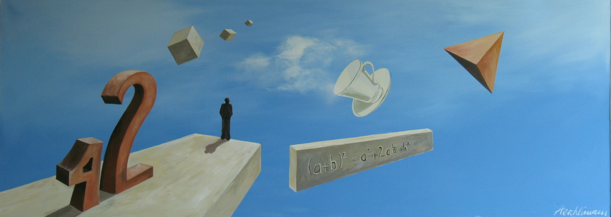

Oberwil |
Oberwil |
FHNW |

Auf dieser Seite finden Sie:
- Skripten
- Maturvorbereitung
-
Tests zu den Themengebieten
Algebra,Geometrie, Analysis , Stochastik
und Semesterklausuren.
Die meisten Tests sind an der Kantonsschule Solothurn entstanden.
Die neueren Tests am Gymnsasium Oberwil sind unter folgendem Link zu finden: Oberwil
Skripten Alle Skripten sind an meinen Unterricht angepasst.
Sie enthalten nicht alles, was im Unterricht passiert - und auch Sachen, die nur kurz erwänhnt werden.
- Skript zur Algebra und Geometrie 1
- Leitprogramm Vektoren
- Leitprogramm komplexe Zahlen
- Skript zur Analysis
- Skript zur Stochastik
Tests zur Algebra
Tests zur Geometrie
| Kapitel | Klausuren | Kurztests |
| Kongruenzabbildungen | SJ0304, SJ0304II, SJ0304III, SJ0405I, SJ0405II, SJ0405III , SJ0405 , SJ0405 | |
| Sinus und Cosinus | SJ0102.DOC, SJ0102, SJ0304, SJ0405 , SJ0405 , SJ0506 , Oberwil | |
| Ähnlichkeit | SJ0001, SJ0102, SJ0102II , SJ0102III , SJ0405 , Oberwil | |
| Sinus- und Cosinussatz | SJ0001.doc , SJ0102 , SJ0405 , SJ0506 , SJ0506 , Oberwil | SJ0102 |
| Goniometrie | 00w4.doc, 01wi4.pdf SJ0506, | SJ0102, SJ0203, SJ0203II, SJ 0405 |
| Stereometrie | SJ0001.doc, SJ0102, SJ0102II , SJ0405 , SJ0405 , SJ0506 , Oberwil | |
| Vektoralgebra | SJ0203 SJ0506 , Oberwil | SJ0203, SJ0203II, SJ0203III, SJ0405, SJ0506 |
| Geraden und Ebenen | SJ0102 , SJ0102N, SJ0203, SJ0405 , SJ0506 , Oberwil | SJ0102, SJ0102N |
| Kugeln | SJ0607 | |
| Lineare Algebra | SJ0203, SJ0304 , SJ0607 | SJ0203, |
Tests zur Analysis
| Kapitel | Klausuren | Kurztests |
| Grenzwerte | SJ0102, SJ0102II, SJ0102III, SJ0203 , SJ0506, SJ0607, Oberwil | SJ0304 |
| Folgen und Reihen | SJ0102, SJ0102II, SJ0405 , SJ0607, SJ0506 , Oberwil | SJ0102, SJ0102II, SJ0304 |
| Differentialrechnung 1 | SJ0102, SJ0102II;SJ0607, Oberwil | SJ0102, SJ0203, SJ0304, SJ0506 |
| Differentialrechnung 2 | SJ0203, SJ0304I, SJ0304II, SJ0405 , SJ0506 , SJ0607 Taylor , Oberwil | |
| Integralrechnung 1 | SJ0203, Oberwil | SJ0304, SJ0506 |
| Integralrechnung 2 | SJ0203, SJ0304, SJ0607, Oberwil | SJ0203 , SJ0405 |
Tests zur Stochastik
| Kapitel | Klausuren | Kurztests |
| Einführung | SJ0304, Oberwil | SJ0203 , SJ0203II , SJ0203 , SJ0304, SJ0506 , SJ0506 |
| Kombinatorik | SJ0203 , SJ0304, SJ0304, SJ0506, SJ0607 , Oberwil | |
| Verteilungen | SJ0304 , SJ0304 | SJ0304 |
| Binomialverteilung | SJ0304 , SJ0304 , SJ0607 | |
| Tests | SJ0203 , SJ0304 , SJ0607, SJ0708 | SJ0203 , |
| Repetition | SJ0203 , SJ0304 |
Semesterklausuren
Maturvorbereitung
| Matur 2003, Klasse 4aM: Prüfungsablauf , Klausur, Lösungen, mündliche Matur |
| Matur 2003, Klasse 4cN: Prüfungsablauf , Klausur, Lösungen, mündliche Matur |
| Matur 2004, Klasse 4cN: Klausur, Lösung mündliche Matur |
| Matur 2004, Klasse 4aM: Klausur, Lösung mündliche Matur |
| Matur 2005, Klasse 4aL: Merkblatt, Klausur, Lösung |
| Matur 2007, Klasse 4bN: Merkblatt, Klausur mit Lösungen, mündliche Matur |
Letzte Änderung: 22.07.2013